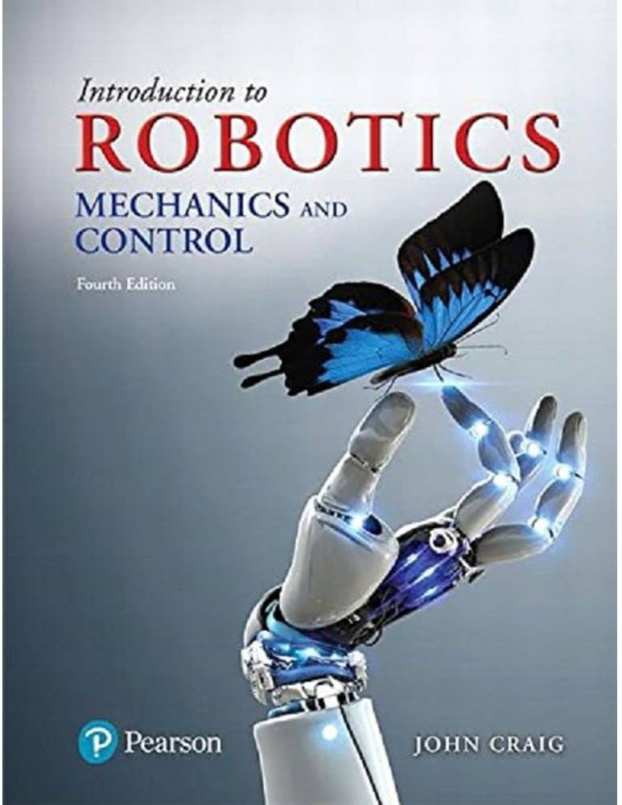
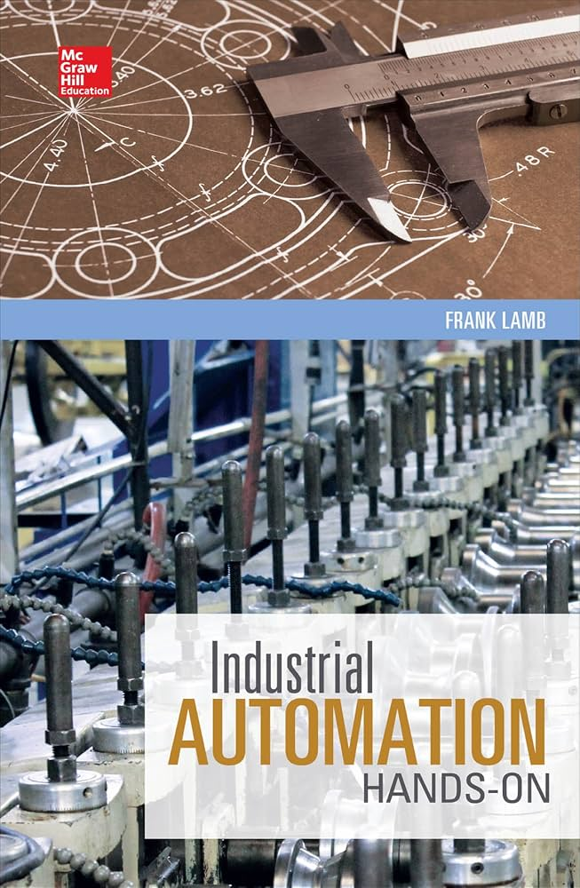
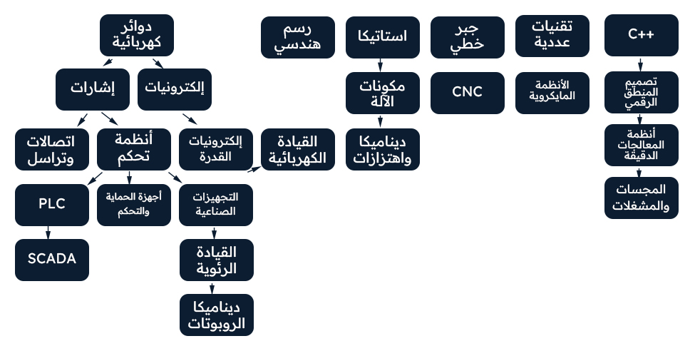

فرع من الهندسة يختص بدمج الهندسة الميكانيكية والهندسة الكهربائية والإلكترونيات وأنظمة التحكم والبرمجة في تصميم أنظمة ذكية ومتكاملة.

● ملخصات:
● شروحات:
- Dr. Osama Elshazly Habib
● كتب:
1-Introduction to Robotics: Mechanics and Control — John J. Craig
2-Robotics: Modelling, Planning and Control — Siciliano et al.

● ملخصات:
● شروحات:
- Electrical Courses
- TECH Palace
● كتب:
1-Industrial Automation: Hands On — Frank Lamb
2-Programmable Logic Controllers and Industrial Automation — Mitra & Sengupta

● ملخصات:
دفتر أحمد الشنطي
ملخص رنيم النغربي
● شروحات:
- ElCoM HU
- MBI
- Hashim EduTech
● كتب:
1-Digital Design — M. Morris Mano & Michael D. Ciletti
2-Fundamentals of Digital Logic with Verilog Design — Stephen Brown & Zvonko Vranesic
3-Digital Design and Computer Architecture — David Harris & Sarah Harris
